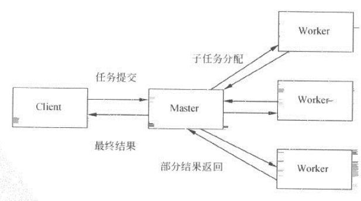

node.js是单进程应用，要充分利用多核cpu的性能，就需要用到多进程架构。
作为web服务器，不能多个进程创建不同的socket文件描述符去accept网络请求， 有经验的同学知道，如果端口被占用了，再跑一个监听该端口的服务就会报EADDRINUSE异常。那么问题来了，多进程架构如何去解决这个问题？
我们把多进程架构设计成典型的master-workers架构， 一个master, 多个worker。
master-workers架构如下图所示：

我们可以在master进程代理accept请求然后分配给worker处理。但客户端进程连接到master进程，master进程连接到worker进程需要用掉两个文件描述符，会浪费掉一倍数量的文件描述符。
所以交由worker来accept请求会是更好的方案。
master先创建一个server监听端口，然后通过进程间通信，把socket文件描述符传递给所有的worker进程， worker进程用传递过来的socket文件描述符封装成server（感官上好像是把一个server对象发送给另一个进程，其实是把相应的句柄封装后，通过JSON.stringify()序列化再发送， 接收端进程还原成相应的句柄。）
然后，还有一个问题，假如其中一个worker进程异常退出了怎么办， 这个时候，worker进程应该要通知到master进程，然后master进程重新fork一个worker进程。
先上master的代码：
1 "use strict"
2
3 const fork = require('child_process').fork;
4 const cpus = require('os').cpus();
5 let server = require('net').createServer((socket)=>{
6 // ‘connection’ 监听器
7 socket.end('Handled by master \n');
8 console.error('Handled by master \n'); //不应该在master accept请求
9 });
10
11
12 server.listen(8001);
13
14 let workers = {};
15
16 function createWorker(ser) {
17 let worker = fork('./worker.js');
18
19 worker.on('message', function(msg, handle) {
20 // 收到子进程通知需要创建新的worker(子进程退出前通知父进程)
21 if(msg ==='new_worker') {
22 let ser = handle;
23 createWorker(ser);
24 // 关掉
25 ser.close();
26 }
27 })
28
29
30 worker.on('exit', function(code, signal){
31 delete workers[worker.pid];
32 });
33
34 // 句柄转发
35 let result = worker.send('server', ser, (err)=> {err&&console.error(err)});
36 console.info('send server to child result:', result);
37 workers[worker.pid] = worker;
38 }
39
40 for(let i=0; i<cpus.length; i++) {
41 createWorker(server);
42 }
43
44 // 关掉，不再accept端口请求
45 server.close();
46
47 /*
48 code <number> The exit code if the child exited on its own.
49 signal <string> The signal by which the child process was terminated.
50 */
51 process.on('exit', function(code, signal) {
52 console.log(`master exit, code:${code}, signal:${signal}`);
53 for(let pid in workers) {
54 workers[pid].kill();
55 }
56 })
57
58 process.on('uncaughtException', function(error) {
59 console.error('master | uncaughtException, error:', error);
60 process.exit(1);
61 })
62
63 //一些常用的退出信号的处理:
64 // kill pid 默认是SIGTERM信号
65 // 控制台 ctrl-c 是SIGINT信号
66 const killSignalList = ['SIGTERM', 'SIGINT'];
67 killSignalList.forEach((SIGNAL)=>{
68 process.on(SIGNAL, function(){
69 console.log(`${SIGNAL} signal`);
70 process.exit(1);
71 })
72 })
master进程根据cpu核数fork相应数量的worker进程， fork成功后马上把server句柄发送给worker进程， fork所有worker进程后， 就把server关掉，不再接收请求。 master进程退出前会调用worker的kill()方法杀掉所有worker进程。
worker代码如下：
1 const http = require('http');
2
3
4 const server = http.createServer(function(req, res) {
5 // ‘request’ 监听器
6 res.end('handled by worker \n');
7 // throw new Error('error');
8 })
9
10 let worker;
11 process.on('message', function(msg, handle){
12 if(msg === 'server') {
13 worker = handle;
14 worker.on('connection', function(socket){
15 server.emit('connection', socket);
16 })
17 }
18
19 })
20
21
22 process.on('uncaughtException', function(err) {
23 console.error('uncaughtException err:', err.message, ', worker进程将重启');
24 // 通知master创建新的worker
25 process.send('new_worker', worker);
26 // 停止接收新的连接
27 worker.close(function() {
28 // 所有已有连接断开后，退出进程
29 process.exit(1);
30 });
31 });
worker进程有个细节处理的地方： 异常退出前，先通知master进程创建新的worker, 然后等待所有已有连接断开后再退出进程。
关于进程间的句柄发送功能， 有兴趣的同学可以再去了解一下， 子进程对象send(message,[sendHandle])方法可以发送的句柄类型有：
多个worker进程监听同一个套接字，会导致惊群现象， 有请求过来时cpu会唤醒所有的worker进程， 最终只有一个进程accept到请求， 其它进程accept请求失败，这种情况会产生一些不必要的开销。 如何避免惊群现象，我另外写一篇文章具体说一下。